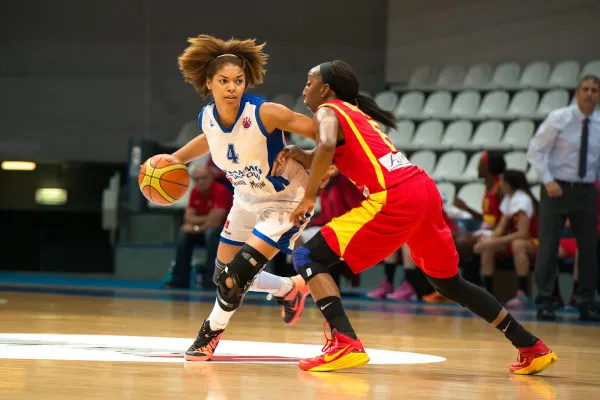
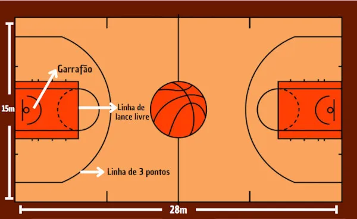

O basquete, um esporte amplamente amado e seguido em todo o mundo, teve seu início nos Estados Unidos em 1891, graças ao professor de Educação Física canadense James Naismith. Naismith estava lecionando na Associação Cristã de Moços de Springfield, Massachusetts, quando foi desafiado a criar um jogo que pudesse ser praticado durante os invernos rigorosos, em ambientes fechados, onde o frio extremo impedia os jovens de jogar ao ar livre. Sua missão era conceber um esporte que fosse facilmente adaptável, que incorporasse exercícios completos e, ao mesmo tempo, evitasse a violência comum em esportes como o futebol americano.
Na busca por uma solução, Naismith imaginou um esporte com um alvo fixo, a cesta, onde uma bola deveria ser arremessada. Inicialmente, as cestas eram improvisadas com pêssegos, sem aberturas. A altura das cestas foi fixada em 3,05 metros, uma medida que permanece a oficial até hoje.
Para garantir a justiça e o espírito esportivo, Naismith estabeleceu 13 regras originais para o jogo, que surpreendentemente permaneceram inalteradas por meio século. Curiosamente, nas regras iniciais, não era permitido quicar (driblar) a bola.
A primeira partida de basquete da história ocorreu em 21 de dezembro de 1891, consistindo em dois tempos de 15 minutos com nove jogadores em cada equipe.
O esforço pioneiro de Naismith na criação do basquete logo se espalhou para o público feminino, graças à professora de Educação Física Senda Berenson Abbott. Ela introduziu o esporte para mulheres no Smith College, nos Estados Unidos, em 1892, até mesmo trocando ideias com o próprio Naismith para aprimorar a prática.
Embora tenha levado alguns anos, o basquete finalmente encontrou seu caminho para os Jogos Olímpicos, sendo apresentado como esporte de demonstração em 1904, em Saint Louis, Missouri, nos Estados Unidos. No entanto, a inclusão oficial nas Olimpíadas só aconteceria 32 anos depois, em Berlim, Alemanha.
A FIBA (Federação Internacional de Basquetebol), criada em junho de 1932 e sediada em Mies, Suíça, desempenha um papel fundamental na organização e regulamentação do basquete em todo o mundo.
Nos Estados Unidos, as quadras de basquete se tornaram palcos importantes na luta da comunidade negra por direitos e igualdade. Vários atletas negros se destacaram e se tornaram ícones do esporte, incluindo Kareem Abdul-Jabbar, Bill Russell, Wilt Chamberlain, Magic Johnson, Kobe Bryant, LeBron James e Michael Jordan, considerado por muitos como o maior jogador de basquete da história.
O basquete americano também consolidou uma forte conexão com a cultura popular, particularmente com o hip-hop e o R&B. Essa relação única entre o esporte e a cultura popular inspirou várias obras cinematográficas, como "Space Jam", "Homens Brancos Não Sabem Enterrar" e "Coach Carter".
O basquete é um esporte praticado por duas equipes, cada uma composta por cinco jogadores em quadra. Os objetivos do jogo são bem definidos:
No ataque, a equipe busca arremessar a bola na cesta do time adversário, tentando encestar o maior número de vezes possível durante a partida. Na defesa, o objetivo é impedir que a equipe adversária realize um ataque bem-sucedido, bloqueando os arremessos e recuperando a posse da bola.
As dimensões da quadra de basquete são padronizadas, medindo 28 metros de comprimento por 15 metros de largura. As cestas estão fixadas em estruturas a uma altura de 3,05 metros em cada extremidade da quadra.
As partidas de basquete geralmente são divididas em quatro tempos de 10 minutos cada, com uma exceção notável na NBA, o maior campeonato de equipes dos Estados Unidos, onde cada quarto dura 12 minutos.
Uma característica única do basquete é a restrição que os jogadores têm em relação ao deslocamento com a bola. Eles só podem avançar com a bola quicando-a no chão, conhecido como driblar, e não podem dar mais de dois passos sem quicar a bola. A pontuação no basquete varia de acordo com a situação de ataque:
As faltas no basquete são comuns e podem resultar em lances livres para a equipe adversária. Situações consideradas faltas incluem:
O basquete é um esporte que se baseia em cinco fundamentos essenciais que desempenham um papel fundamental em cada partida:
Esses cinco fundamentos são fundamentais para o sucesso no basquete e são praticados repetidamente pelos jogadores em treinamentos e partidas. Eles formam a base do jogo e influenciam diretamente o desempenho de uma equipe em quadra.
No basquete, as posições dos jogadores desempenham papéis específicos e têm características distintas que contribuem para o sucesso da equipe. Aqui estão as características de cada posição:
Cada posição desempenha um papel específico na equipe e requer habilidades únicas. A combinação de diferentes posições e jogadores com suas habilidades individuais é essencial para o sucesso de uma equipe de basquete.
No basquete, diversos termos e jogadas têm significados específicos que ajudam a descrever o jogo e suas ações. Aqui estão alguns desses termos:
Esses termos são fundamentais para a descrição e análise do basquete, tornando o jogo mais compreensível e emocionante para os fãs e os jogadores. Eles capturam momentos cruciais e a diversidade de habilidades envolvidas no esporte.
A National Basketball Association (NBA), a maior liga de basquete do mundo, foi fundada em 1946 e realizou sua primeira partida no mesmo ano entre o Toronto Huskies e o New York Knicks. Atualmente, a NBA consiste em 30 equipes, sendo 29 dos Estados Unidos e uma equipe representando o Canadá, o Toronto Raptors. As equipes são divididas geograficamente em duas conferências, a Conferência Leste e a Conferência Oeste, cada uma com 15 times. A NBA é um dos eventos esportivos mais lucrativos dos Estados Unidos, com receitas que já ultrapassaram os US$ 8 bilhões, atraindo a atenção de uma ampla base de fãs, inúmeras transmissões de mídia e investidores do ramo esportivo. Os maiores campeões da história da liga são o Los Angeles Lakers e o Boston Celtics, cada um com 17 títulos.
O basquete chegou ao Brasil em 1896, introduzido pelo missionário americano Augusto Shaw, que o implantou no Colégio Mackenzie, em São Paulo. No início, as mulheres demonstraram maior interesse pelo esporte, enquanto os homens tinham uma predileção mais forte pelo futebol. As Associações Cristãs de Moços desempenharam um papel importante na prática do basquete. O primeiro torneio de basquete no Brasil ocorreu no Rio de Janeiro em 1912. Em 1915, as regras do basquete foram traduzidas para o português, permitindo uma compreensão mais ampla do esporte e sua disseminação pelo país. Escolas e clubes passaram a adotar o basquete como uma prática esportiva. Em 1922, a Seleção Brasileira de Basquete foi convocada para seu primeiro torneio internacional, vencendo-o sob a liderança do treinador dos Estados Unidos, Fred Brown. Em 1933, a Federação Brasileira de Basketball, atual Confederação Brasileira de Basquetebol (CBB), foi fundada no Rio de Janeiro. Oscar Schmidt, conhecido como "Mão Santa," é o destaque brasileiro no basquete e é considerado o maior pontuador da história do esporte, com um total de 49.703 pontos em 1.613 jogos.
O basquete estreou como esporte de exibição nas Olimpíadas de Saint Louis, em 1904, mas só foi oficialmente incluído no programa olímpico em 1936, nos Jogos de Berlim. Os Estados Unidos foram campeões em todas as edições até 1972, quando a União Soviética interrompeu a sequência de vitórias americanas. Os Estados Unidos mantêm o recorde com 16 títulos olímpicos no basquete masculino, seguidos apenas pela Iugoslávia, Argentina e União Soviética, que também conquistaram ouros. A equipe masculina do Brasil conquistou três medalhas de bronze, com a última em 1964, em Tóquio. O basquete feminino fez sua estreia olímpica nas Olimpíadas de Montreal, em 1976, com os Estados Unidos conquistando nove títulos, enquanto a União Soviética conquistou dois ouros. A equipe feminina do Brasil ganhou uma medalha de prata em 1996 e uma de bronze em 2000, com Hortência sendo uma das maiores atletas do basquete feminino.
Explore as enterradas mais incríveis da história do basquete, momentos memoráveis em que jogadores voaram pelos ares para cravar a bola na cesta. Descubra como essas jogadas espetaculares mudaram o jogo e emocionaram os fãs.
VisitarSaiba mais sobre as lesões que afetaram alguns dos maiores jogadores de basquete e como eles se recuperaram. Esteja por dentro das histórias de superação e das reviravoltas emocionantes que esses atletas enfrentaram em sua jornada de retorno às quadras.
VisitarEntre nos bastidores das estatísticas avançadas do basquete, e descubra como os números podem revelar insights surpreendentes sobre o desempenho dos jogadores e equipes. Aprenda como as métricas avançadas estão moldando o jogo moderno.
VisitarExplore o impacto social e ativismo dos jogadores da NBA fora das quadras. Descubra como esses atletas usam suas vozes e plataformas para criar mudanças significativas na sociedade e na comunidade.
VisitarReviva as rivalidades mais intensas e icônicas da história da NBA. Saiba mais sobre os confrontos épicos entre equipes e jogadores que moldaram o caminho do basquete profissional.
VisitarAnalise o papel crucial dos treinadores no basquete e como suas estratégias e liderança moldam o desempenho das equipes. Conheça as mentes por trás das jogadas vitoriosas e dos campeonatos memoráveis.
Visitar